How to figure out the IP address used for a failed logon attempt?
NOTE:
There is no IP address field in the 'Failed Logon Attempts' report.
However there are 2 ways you can figure out the IP address:
- Locate the event and review the event data. To do this, refer to Procedure 1.
- Enable the "Write event descriptions into the database" option. To do this, refer to Procedure 2.
Procedure 1:
- Note the Computer name and the timestamp of the particular failed logon attempt.
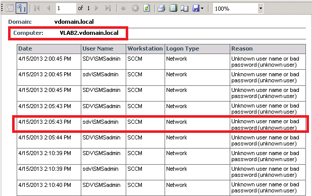
- Go to Start / All Programs / NetWrix / Event Log Manager / Advanced Tools / Viewer
- In the Viewer tool:
- select Managed Object name from the drop-down list
- select Computer, that you have noticed on step 1 as Computer name
- select Event Log as Security
- specify dates From and To, use date from the timestamp that you have noticed on step 1
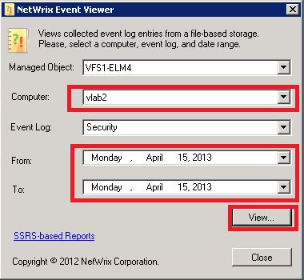
- Click the View button, and specify the location of the evt-file and click OK. The newly saved event log will be opened in Event Viewer automatically.
- To convert the evt-file to evtx format, in the left hand panel, right click the saved log and select Save All Events As, specify the location of the evtx-file and click OK. Open the saved file via Event Viewer.
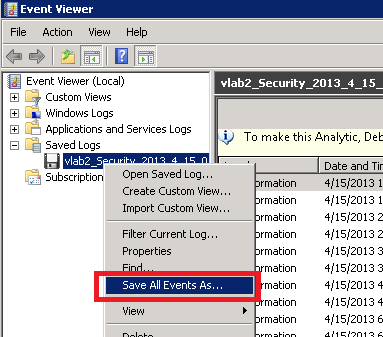
- When the evtx-file is opened, click Filter Current Log in the Actions pane.
- In the Filter Current Log dialog box, specify Event ID as 4625,529-537,539 (failed logon attempts IDs), and then click Logged drop-down list and select Custom range.
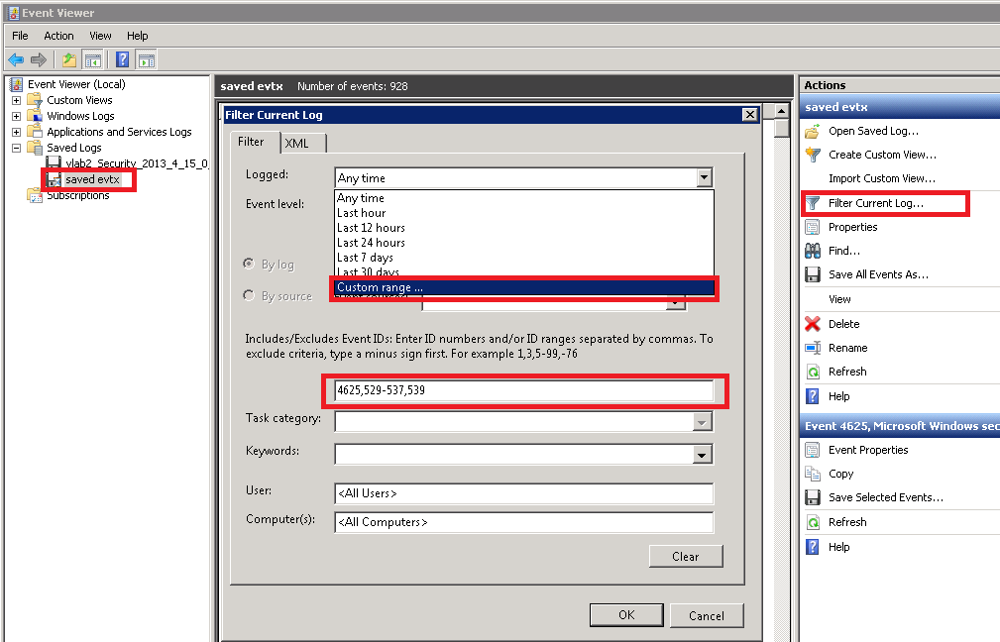
- Specify date range around the timestamp that you have noticed on step 1 and click OK. Click OK
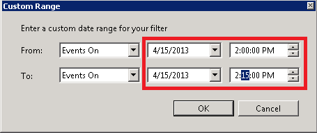
- Find the corresponding event in the filtered log and double-click it.
- The IP Address is displayed in the Network Information section of the event description.
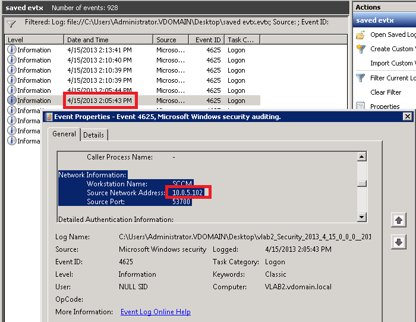
Procedure 2:
- Note the Computer name and the timestamp of the particular failed logon attempt.
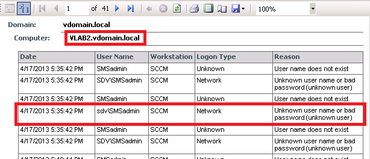
- In the NetWrix Management Console, go to Managed Objects / <Your Mananaged Object> / Event Log Manager node.
- Enable the "Write event descriptions into the database" check box (if it is already selected, continue from step 6). Close console.
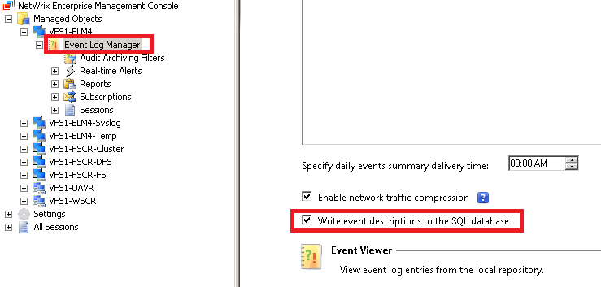
- Go to Start / All Programs / NetWrix / Event Log Manager / Advanced Tools / DB Importer
- Select your managed object from the drop-down list and specify the date range that includes the date of the event. Click Import.
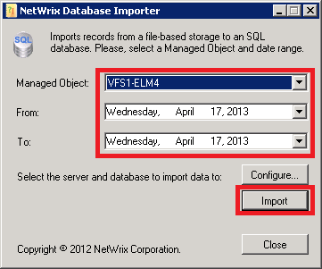
- Start NetWrix Management Console, go to Managed Objects / <Your Mananaged Object> / Event Log Manager / Reports / General Reports / All Events by Computer report.
- In the filters:
- specify date range around the timestamp that you have noticed on step 1
- specify Computer as Computer name you have noticed on step 1 (put % before and after the name)
- specify Event ID as %5%
- specify Event Log as Security
"
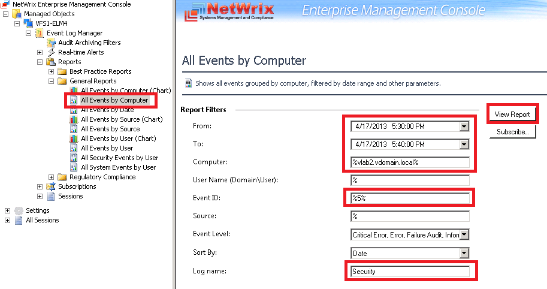
- Click the View Report button.
- Find the corresponding event in the filtered log and click the blue link in the Date field.
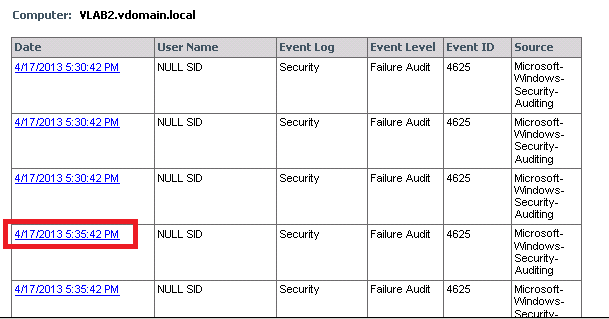
- The page with Event Details will be displayed.
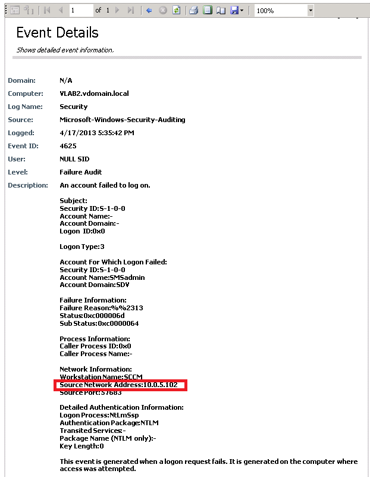
NOTE:
- The IP address is not always available in the description of the Failed logon attempt events.
- If you are looking for full description for another event, the described steps are similar except the specified Event IDs will be different.